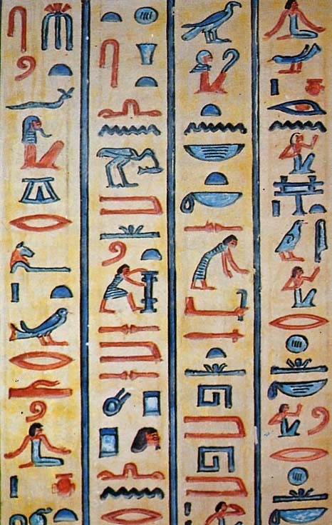

Existing Problem Languages

Text Based
- DFG
- Prefix style
- Not easy for programs to parse
- Not easy for humans to read and write
- No formula independence
- KIF
- LISP like
- Beyond the requirements of ATP
- TPTP
- Prolog like
- Easy for programs to parse
- Easy for humans to read and text edit
- Widely used
- Different syntaxes for CNF and FOF
XML Based
- XML SCL
- Part of the CL effort (SCL abstract syntax)
- Under construction
- OpenMath and MathML
- OpenMath is concerned with meaning
- MathML is concerned with presentation
- OmDoc
- Extends OpenMath and MathML
- Concentrates on representing the meaning of mathematical formulae